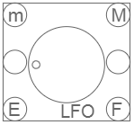
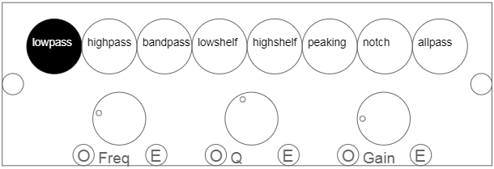
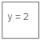

Basics
This is a modular sythesizer that runs in your web browser. I have only tested it in Google Chrome
on PC and Android, so it may not work on other browsers or operating systems.
There is a piano roll
that can be used to play back songs. Songs can be loaded into the roll from midi files. All midi notes
will be played through the same synthesizer, so files with drum tracks are not going to sound good.
Synthesizer patches can be saved using the "save config" box at the bottom of the page. If
no file name is entered into the text field, the file will be saved as "synthconfig" by default.
Patches can be loaded from saved files using the "load config" box. There are also a few sample
patches there.
Keyboard
You can click on the virtual keyboard to play notes. If you're using a computer, the physical keyboard
will be tied to the virtual keyboard.
Play Controls
"monoph": disables polyphony
"porto": enables portomento if polyphony is disabled
"time": controls how fast the frequency slides if portomento is enabled
"voices": controls how many voices are available to the synthesizer. Song playback will
fail if the number of keys pressed simultaneously is more than the number of voices.
Fast Forward button: loads up the next song in the playlist
Play button: plays the currently loaded song
GoTo button: ignore this
Step Back button: steps backwards through the piano roll
Step Forward button: hmmm
Module Bar
Drag a synthesizer module from this bar to create a new copy of the module. You can remove
modules by dragging them into the trash can.
Keyboard Module
This module is hardwired to the keyboard. It receives every key press and release.
Inputs:
Outputs:
- For convenience, there are two output nodes. Both nodes output the same information: 1) an on/off trigger
signal, 2) a voice ID if polyphony is enabled (25 voices are enabled by default), and 3) a frequency value.
Button Module
This module outputs an on trigger when the mouse is pressed and an off trigger when the mouse is released.
Inputs:
Outputs:
Switch Module
This module outputs an on trigger when it is toggled on by a mouse click and an off trigger when it
is toggled off by a mouse click.
Inputs:
Outputs:
Osc Module
This module contains a single oscillator for each voice of the synthesizer.
Inputs:
Outputs:

PWM Module
This module contains a pulse width modified oscillator and a knob to control the duty cycle.
Inputs:
Outputs:
White Noise Module
This module outputs white noise.
Inputs:
Outputs:
Gain Module

This is a VCA with a gain knob for controlling the volume of an audio signal.
Inputs:
Outputs:
ADSR Module
This is an envelope whose main purpose is to turn a gain icon into an ADSR. To do so, plug
a keyboard module into the trigger (T) input of the ADSR, and the output of the ADSR into the
envelope (E) input of the gain icon.
Controls:
- tA: time duration of attack
- tD: time duration of decay
- vD: volume to decay to
- tS: time duration of sustain
- vS: final volume at the end of the sustain duration
- tR: time duration of release
Inputs:
Outputs:
- Envelope: can be applied to an oscillator frequency input, or the envelope input of a knob
Envelope Module
This is a general purpose envelope that can be used for pitch, volume, or other knob settings.
Controls:
- vS: start value
- tA: time duration of 1st leg of envelope
- vA: final value of 1st leg of envelope
- tD: time duration of 2nd leg of envelope
- vD: final value of 2nd leg of envelope
Inputs:
Outputs:
- Envelope: can be applied to an oscillator frequency input, or the envelope input of a knob
Filter Module

An audio filter.
Inputs:
Outputs:
Compressor Module
A compressor. This module isn't fully developed yet.
Inputs:
Outputs:
Convolver Module
A convolver. This module isn't fully developed yet. Currently it only does a basic reverb. It seems
to require a lot of processing power as well, so it may work better if you lower the voice count.
Inputs:
Outputs:
Shaper Module
A convolver. This module isn't fully developed yet. Currently it only does distortion.
Inputs:
Outputs:

Value Module
This module is used to set a numerical value. It can also receive a value from a keyboard module
and pass the keyboard's trigger event through to the output as well. This is useful if you want
to perform some arithmetic on the frequency value before passing it to an oscillator. See the
sample config for an example.
Inputs:
Outputs:
- Value: sets the value of the object it is plugged into.
Multiplier Module
This module outputs a value like the Value Module, but accepts a value as it's input and
multiplies the input value before passing it to the output.
Inputs:
Outputs:
Splitter Module
This module takes various types of inputs and copies the input to multiple outputs. Note
that the outputs can't be connected unless an input is connected. Disconnecting an input
will reset all of the output connections.
Inputs:
Outputs:
Three copies of the input
Merger Module
This module takes three inputs and combines them into one output. It can perform numerical
addition if connecting multiple values and outputting to a value module. Note that the inputs
can't be connected unless the output is connected. Disconnecting the output will reset
all of the input connections.
Inputs:
Outputs:
Sequence Module
This module is not fully developed. Currently it can record and play back a sequence of keyboard
inputs. To begin recording, connect a keyboard module. To end recording, disconnect the keyboard
module. To play back the sequence, click the button on the sequence module.
Inputs:
Outputs:
Like the keyboard module, there are two outputs that both output a frequency and a trigger event.
- If recording: pass-through of keyboard module.
- If not recording: replay of recorded sequence.
Timer Module
This module is not fully developed. Currently it alternates between outputting an on trigger and
an off trigger with the specified time interval.
Inputs:
Outputs:
- Text: a value can be entered the same way as the Value Module. The value will be the
timer interval in seconds.
- On and off triggers at the specified interval.
Equalizer Module
A simple equalizer.
Inputs:
Outputs:
Speaker Module
This module takes any audio input and connects it to your device's speakers.
Inputs:
Outputs:
Analyser Module
This module visualizes any audio signal.
Inputs:
Outputs: